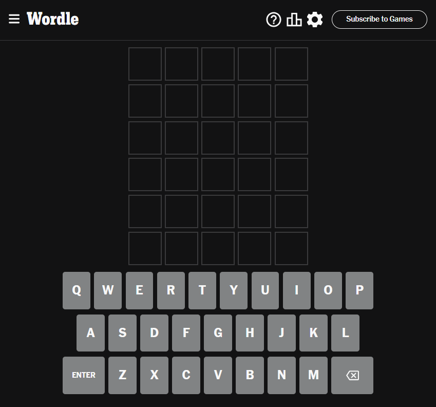

CSS-стайлинг
Стилевое оформление классической игры Wordle от New York Times можно описать следующим образом:
1. Цветовая палитра:
• Для фонового цвета используется светло-серый (или тёмно-серый — для тёмной темы) оттенок, который создает
нейтральную и приятную основу для игры
• Цветовая схема для букв включает яркие и насыщенные цвета, что делает их легко различимыми на фоне
• Неправильные буквы помечены графическими элементами или оттенками, отличными от правильных букв. Это помогает игрокам
увидеть, что они выбрали неправильную букву
2. Типография:
• Заголовки и названия отображаются с использованием чистого и простого шрифта без засечек
• Обычно в качестве шрифта используется . Они придают игре современный и стильный вид
3. Графический дизайн:
• Графика сфокусирована на самой игре. Например, отсутствуют лишние визуальные элементы или сложные
анимации, которые могут отвлекать игроков от сути игры
• Игровое поле представляет собой прямоугольник, разбитый на клетки, где каждая клетка содержит одну букву. Каждая буква
отображается ясно и четко, что помогает игрокам легко распознавать и выбирать буквы.
Стилевое оформление Wordle от New York Times должно послужить эталоном при создании стиля страницы. Оно элегантно, минималистично и профессионально. Однако вкусы у всех разные, и тема каждого конкретного клона может отличаться. Поэтому сложно привести стандарт кода, удовлетворяющий всем условиям.